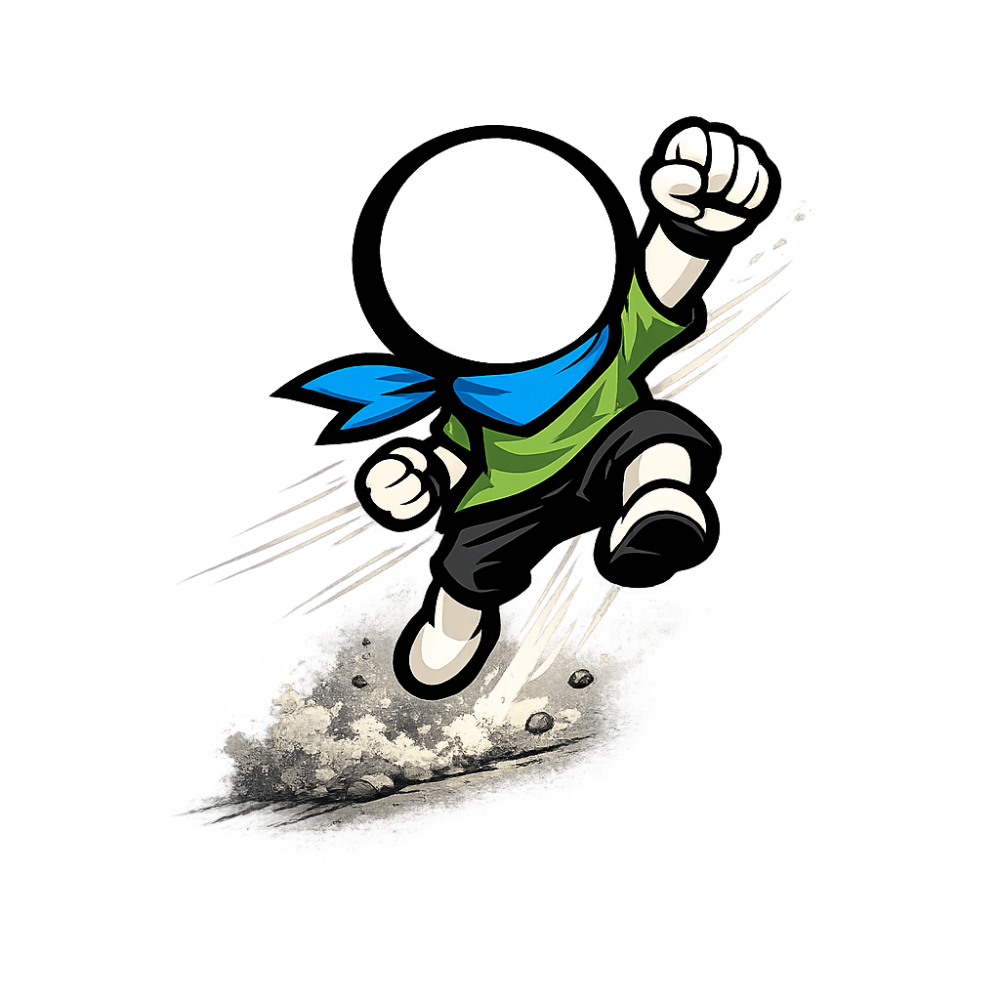

FR / EN
Mario Movie: Actions

Dynamic action prompts
Download video
Commencer
Press to continue
Votre navigateur ne supporte pas la balise vidéo.
PARTIE TERMINÉE
Completed prompts: 0 / 0
Presses outside pauses: 0
RESTART